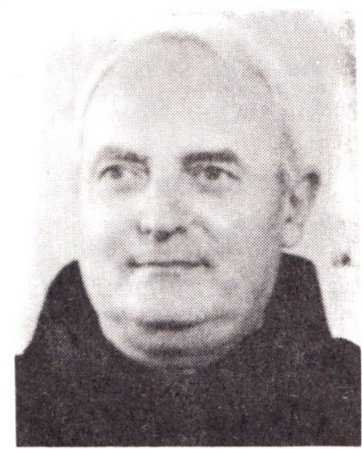
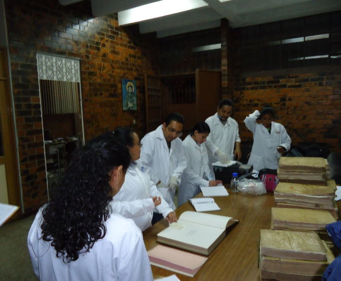
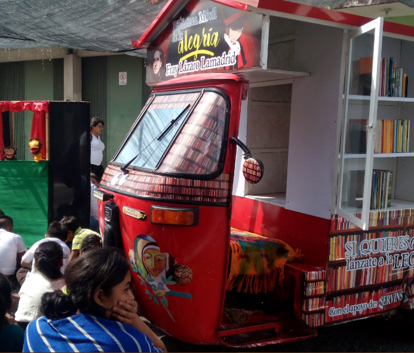

Bienvenidos
La Biblioteca Franciscana es un espacio dedicado a la conservación, estudio y difusión del legado documental de la Provincia Franciscana de Guatemala.

Preservando la memoria franciscana en Guatemala
La Biblioteca Franciscana es un espacio dedicado a la conservación, estudio y difusión del legado documental de la Provincia Franciscana de Guatemala.
La Biblioteca Franciscana "Fray Lázaro Lamadrid", tiene su origien como tal el día 17 de abril de 1988. La creación de esta Biblioteca Franciscana obedece ante todo, a la responsabilidad que siente los frailes por continuar la obra realizada por los antecesores, especialmente de las dos Provincias Franciscanas de San Jorge y Santísimo Nombre de Jesús de la época colonial. En la conclusión concreta de ciertos intentos de frailes comprometidos en el campo de la cultura. La Biblioteca en un primer momento funcionó bajo otro nombre (Biblioteca del Instituto Teológico Franciscano de Panamá), antes de ocupar la sede actual.
La Biblioteca “Fray Lázaro La Madrid” es una herencia de la ardua labor de Fr. Alberto Ghinato, a quien se le debe gran parte del caudal de libros y archivos. Tiene su origen en 1988 y pretende ofrecer un servicio a los frailes de la Provincia Franciscana “Nuestra Señora de Guadalupe”, a los hermanos y hermanas de la Familia Franciscana y a todas aquellas personas investigadoras, estudiantes y aficionados al saber humano-religioso. El 70% del material de la Biblioteca procede de la colección de Fr. Alberto Ghinato (+1990). Fr. Alberto, gran conocedor de franciscanismo, y por muchos años profesor en la Universidad Franciscana de San Antonio en Roma (Antonianum), vino a Centro América con la idea de crear en la región un centro de estudios franciscanos, donando para esto todos sus libros personales.

Desde su fundación, la biblioteca ha sido dirigida por frailes comprometidos con la misión de preservar y compartir el conocimiento franciscano.


Contamos con procesos especializados para la restauración y digitalización de documentos antiguos, asegurando su preservación para futuras generaciones.

La iniciativa "Biblioteca en la Calle" lleva el conocimiento franciscano a las comunidades, promoviendo la lectura y el diálogo cultural.

📍 28 calle 8-45, La Reformita zona 12-Guatemala City, Guatemala
📧 biblalm2022@gmail.com
☎️ (502) 2234 5628